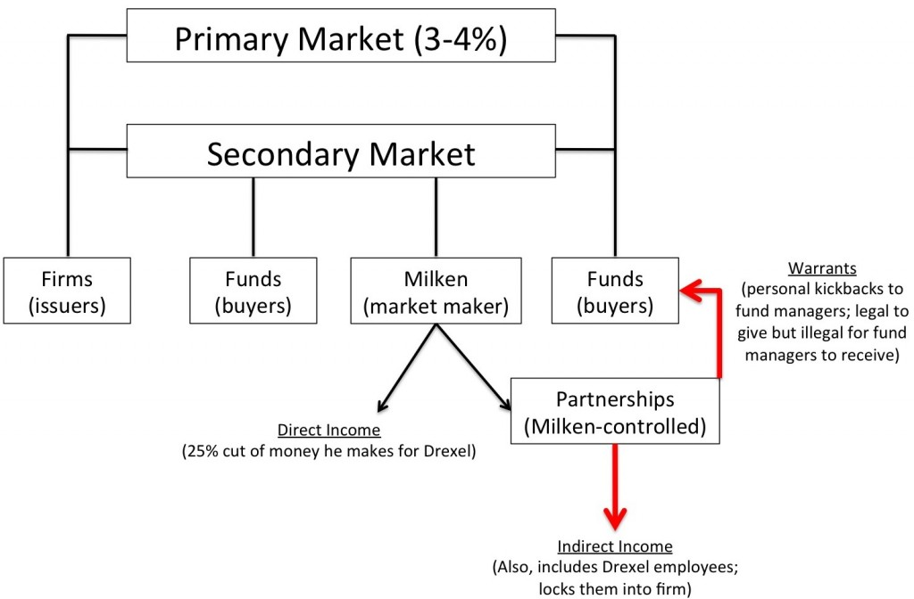

Michael Milken (CMC, Wednesday, Week 11)
coming-of-managerial-capitalismyear-twoMichael Milken: savior of American growth or common criminal?
America in the 1970s/80s:
-- Deregulation, shift from manufacturing to service economy
-- Poorly-run large companies (maybe)
-- Future growth: small, riskier companies
-- Inflation drops in early '80s
=== Trend: Replacement Cost > Market Value ===
-- Discount factor => Stock market is undervalued? Complacent big companies? Suboptimal capital structures?
-- Focus on high agency costs => Notion of "shareholder value" develops, backlash against managerial complacency. Decline of managerial capitalism??
And so, junk bonds:
Serve investor with higher risk appetite; betting on credit risk, not interest rates
Drexel takes the lead as market-maker
MILKEN => foresight to realize that smaller firms need access to debt
Sounds great. So what goes wrong?

{kind=link}
How does Milken maintain power?
-- Charisma, personal loyalty, cult of personality
-- He makes money for EVERYONE
-- Informational advantage
-- Due diligence capability, pricing
-- Network
-- Underwriting: Drexel buys full issue
-- ONE-MAN MARKET
Consequences:
Presages rise of financial instruments.
Wave of MBOs and LBOs.
Decline of old-style managerial capitalism
Democratization of capital ... and then the savings and loan crisis.